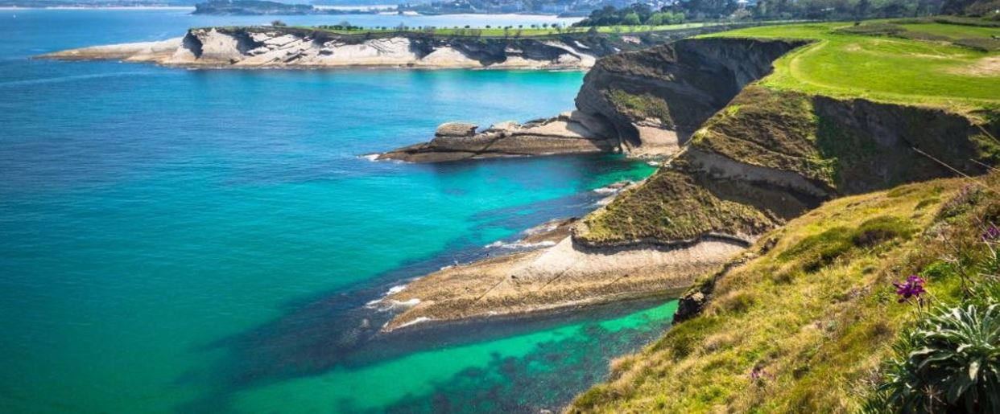

SOLICITA MÁS INFORMACIÓN PARA TUS VACACIONES:
VACACIONES EN CANTABRIA
CANTABRIA es una comunidad eminentemente costera
y montañosa, como lo demuestra el hecho de que la mayoría de su población vive
junto al mar, lo cual con lleva una gran presión humana sobre el litoral.
La costa cántabra se extiende por todo el litoral de la región homónima y está
dividida por la Costa Vasca al este y la Costa Verde, al oeste.

El Mar Cantábrico:
Baña seis provincias Españolas,
entre ellas hay dos que son Gallegas y otras dos pertenecen al País Vasco.
Aquí se muestra una tabla de las seis al completo:
GALICIA |
LUGO |
| A CORUÑA |
PAÍS VASCO |
GUIPÚZCOA |
| VIZCAYA |
ASTURIAS |
CANTABRIA |
Por otro lado, éstos son los municipios de Cantabria con costa:
- San Vicente de la Barquera
- Laredo
- Santoña
- Comillas
- Noja
- Liencres
- Santillana del Mar
- Castro Urdiales
- Miengo
ENLACES COMPAÑEROS
-
Francisco Javier
-
Jaury
-
Valentín
-
Hector Gutiérrez
-
Alberto
-
Andrés Dosal
-
Andrés Cue